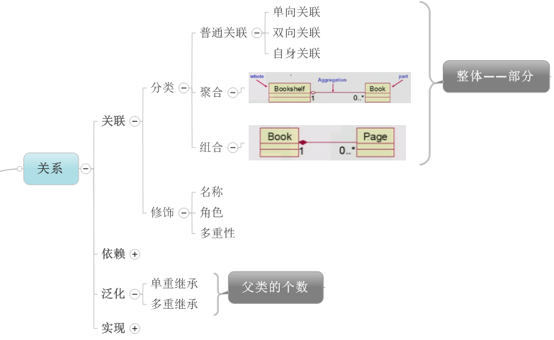
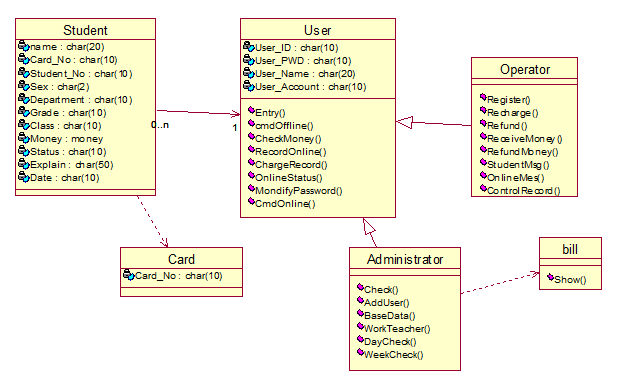

UML静态图
类图
类图是描述类，接口，协作以及它们之间关系的图，用来显示系统中各个类的静态结构。类图是定义其他图的基础，在类图的基础上，可以使用状态图，协作图，组件图和配置图等进一步描述系统其他方面的特性。
类
类定义了一组有着状态和行为的对象。其中属性和关联用来描述状态。属性通常用 没有身份的数据值表示，如数字和字符串。关联则用有身份的对象之间的关系表示。行为由操作来描述，方法是操作的实现。对象的生命期则由附加给类的状态机来描述。
类图的关系

1，关联关系
普通关联
a，单向关联：A->B表示相识关系，指A知道B，A可以调用B的公共属性和方法。没有生命期的依赖，表示一种引用。
b，双向关联：A-B表示A认识B，B知道A的存在，A可以调用B的方法和属性；同样B也可以调用A的方法和属性。
c，自身关联：自己引用自己，带着一个自己的引用。
聚合
当类之间存在整体与部分的关系时，可以使用，聚合表示部分可以独立整体而单独存在。
组合
当类之间存在整体与部分的关系时，可以使用，组合表示部分不可独立整体存在。
2，依赖
类A要完成某个功能必须引用类B，则A与B存在依赖关系，依赖关系是弱的关联关系。
3，泛化
在面向对象的分析过程中，先从一个一个具体地对象分析出类，再把一个一个具体类的共性抽取出来得到更抽象的类，这个过程叫泛化，得到的更抽象的类成为泛化类，泛化类和具体类之间的关系称为泛化关系。
4，实现
实现关系是用来描述接口和实现接口类的关系。接口可以看成是一种特殊的类，它强调对外提供的功能和行为结果。
针对机房收费系统画的类图：

对象图
对象图表示一组对象及它们之间的联系。对象图时系统的详细状态在某一时刻的快照，常用于表示复杂的类图的一个实例。
UML中对象图与类图具有相同的表示形式，对象图中的建模元素有对象和链。对象时类的实例，对象之间的链是类之间的管理的实例，对象图实质上是类图的实例。在UML中，对象图的使用相当有限，主要用于表达数据结构的示例，以及了解系统在某个特定时刻的具体情况等。